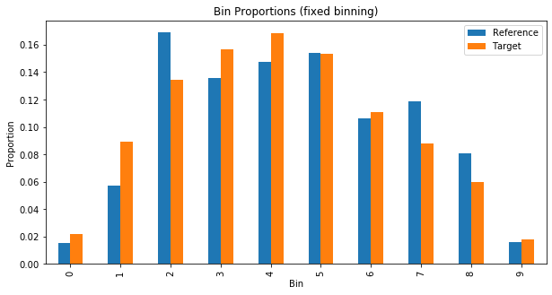
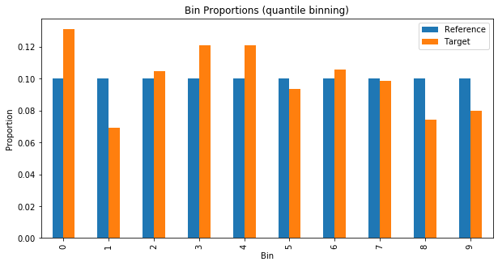
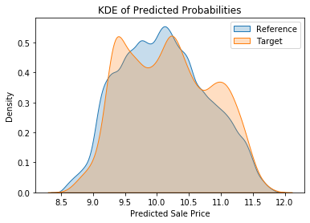
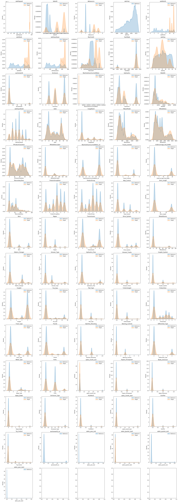

from typing import List, Tuple
import matplotlib.pyplot as plt
import numpy as np
import pandas as pd
import seaborn as sns
from sklearn.ensemble import RandomForestRegressor
from fastai.tabular.all import add_datepart, cont_cat_split, TabularPandas, Categorify, FillMissing
pd.set_option("display.max_columns", None)
plt.rcParams["figure.facecolor"] = (1, 1, 1, 0) # RGBA tuple with alpha=0
plt.rcParams["axes.facecolor"] = (1, 1, 1, 0) # RGBA tuple with alpha=0Population Stability Index (PSI)
PSI is a measure of how much a population has shifted over time or between two different samples of a population in a single number. It does this by binning the two distributions and comparing the proportion of items in each bin. This results in a single number you can use to understand how different the populations are.
Example
We’ll train a model on the Blue Book for Bulldozers dataset. The training set for this is the data from before October 2011 and the validation set is everything after that. The PSI score will help us understand if the population has shifted between the two sets.
df = pd.read_csv(f"../data/bluebook-for-bulldozers/TrainAndValid.csv", low_memory=False, parse_dates=["saledate"])df["SalePrice"] = np.log(df["SalePrice"])df = add_datepart(df, "saledate", drop=False)df["ProductSize"] = df["ProductSize"].astype("category")
df["ProductSize"] = df["ProductSize"].cat.set_categories(
["Compact", "Mini", "Small", "Medium", "Large / Medium", "Large"], ordered=True
)
df["UsageBand"] = df["UsageBand"].astype("category")
df["UsageBand"] = df["UsageBand"].cat.set_categories(["Low", "Medium", "High"], ordered=True)conts, cats = cont_cat_split(df.drop(columns=["saledate"]), max_card=20, dep_var="SalePrice")procs = [Categorify, FillMissing]cond = (df["saleYear"] < 2011) | (df["saleMonth"] < 10)
train_idx = np.where(cond)[0]
valid_idx = np.where(~cond)[0]
splits = (list(train_idx), list(valid_idx))to = TabularPandas(df.drop(columns=["saledate"]), procs, cats, conts, y_names="SalePrice", splits=splits)len(conts), len(cats)(11, 55)m = RandomForestRegressor(n_jobs=-1)
m.fit(np.array(to.train.xs), np.array(to.train.y))RandomForestRegressor(n_jobs=-1)In a Jupyter environment, please rerun this cell to show the HTML representation or trust the notebook.
On GitHub, the HTML representation is unable to render, please try loading this page with nbviewer.org.
RandomForestRegressor(n_jobs=-1)
print(m.score(np.array(to.train.xs), np.array(to.train.y)))
print(m.score(np.array(to.valid.xs), np.array(to.valid.y)))0.9881219285666549
0.8943878785209834train_preds = m.predict(np.array(to.train.xs))
valid_preds = m.predict(np.array(to.valid.xs))train_preds.min(), train_preds.max(), train_preds.mean()(8.490840711593627, 11.847966022491455, 10.104334967219676)PSI
We calculate the PSI like this:
Take two distributions, the reference and the target
Create
n_binsnumber of bins- If the
bin_modeisfixedthen the bins are created with equal width (the delta between the min and max value in each bin is the same) - If the
bin_modeisquantilethen the bins are created so an equal number of items fall into each bin
Note that the bins are created for the reference distribution and then applied to the target distribution
- If the
Calculate the proportion of items in each bin for the reference and target distributions
Add a small value
epsilonto any proportions with a value of 0 to avoid dividing by or taking the log of 0 in PSI formulaCalculate the PSI. The formula is:
\[ PSI = \sum_{b=1}^{B}((\text{TargetProp($b$)} - \text{RefProp($b$)})) \times \ln(\frac{\text{TargetProp($b$)}}{\text{RefProp($b$)}}) \]
\(\text{RefProp(b)}\) = Proportionof counts within bin \(b\) from the reference distribution
\(\text{TargetProp(b)}\) = Proportion of counts within bin \(b\) from the target distribution
\(\text{B}\) = Number of bins
def get_population_proportions(
ref: np.ndarray, target: np.ndarray, n_bins: int, bin_mode: str, eps: float = 0.001
) -> Tuple[np.ndarray, np.ndarray]:
if bin_mode == "fixed":
ref_counts, breakpoints = np.histogram(ref, n_bins)
elif bin_mode == "quantile":
breakpoints = np.quantile(ref, np.arange(0, n_bins + 1) / (n_bins) * 100 / 100)
ref_counts = np.histogram(ref, breakpoints)[0]
target_counts = np.histogram(target, breakpoints)[0]
ref_proportions = ref_counts / ref_counts.sum()
target_proportions = target_counts / target_counts.sum()
ref_proportions = np.where(ref_proportions == 0, eps, ref_proportions)
target_proportions = np.where(target_proportions == 0, eps, target_proportions)
return ref_proportions, target_proportionsdef psi(ref: np.ndarray, target: np.ndarray, n_bins: int, bin_mode: str, eps: float = 0.001) -> float:
ref_proportions, target_proportions = get_population_proportions(ref, target, n_bins, bin_mode, eps)
psi = np.sum((target_proportions - ref_proportions) * np.log(target_proportions / ref_proportions))
return psipsi(train_preds, valid_preds, 10, "fixed")0.05345701915243874psi(train_preds, valid_preds, 10, "quantile")0.05602506051260836When it comes to interpreting the PSI score, the general rule of thumb is that:
- PSI < 0.1: no significant population change
- PSI < 0.2: moderate population change
- PSI >= 0.2: significant population change
In the case of our example it looks there isn’t any significant population change between the training and validation sets.
Visualising PSI
Plotting the proportions in each bin can help us see how the two distributions vary.
def plot_bin_proportions(ref: np.ndarray, target: np.ndarray, n_bins: int, bin_mode: str, eps: float = 0.001):
ref_proportions, target_proportions = get_population_proportions(ref, target, n_bins, bin_mode, eps)
fig, ax = plt.subplots(figsize=(10, 5))
df = pd.DataFrame({"ref": ref_proportions, "target": target_proportions, "bin": range(n_bins)})
df.plot.bar(x="bin", ax=ax)
ax.set_title(f"Bin Proportions ({bin_mode} binning)")
ax.set_xlabel("Bin")
ax.set_ylabel("Proportion")
ax.legend(["Reference", "Target"])
plt.show()plot_bin_proportions(valid_preds, train_preds, 10, "fixed")
plot_bin_proportions(valid_preds, train_preds, 10, "quantile")
We can see something similar without resorting to binning by creating a kernel density estimate (KDE) plot. This represents the data using a continuous probability density curve in one or more dimensions. To quote the Seaborn documentation:
“Relative to a histogram, KDE can produce a plot that is less cluttered and more interpretable, especially when drawing multiple distributions. But it has the potential to introduce distortions if the underlying distribution is bounded or not smooth. Like a histogram, the quality of the representation also depends on the selection of good smoothing parameters.”
def plot_densities(ref: np.ndarray, target: np.ndarray, figsize: Tuple[int, int] = None):
fig, ax = plt.subplots(figsize=figsize)
sns.kdeplot(ref, shade=True, label="Initial", ax=ax)
sns.kdeplot(target, shade=True, label="New", ax=ax)
ax.set_title("KDE of Predicted Probabilities")
ax.set_xlabel("Predicted Sale Price")
ax.legend(["Reference", "Target"])
plt.show()plot_densities(train_preds, valid_preds)
Feature Stability Importance (FSI)
Feature (also known as Characteristic) Stability Importance (FSI) is a measure of how much a feature varies between two distributions. It is calculated by taking the PSI score for each feature and then normalising it by the PSI score for the whole dataset. This results in a single number for each feature that can be used to understand how stable the feature is.
def fsi(
ref_df: pd.DataFrame, target_df: pd.DataFrame, features: List[str], n_bins: int, bin_mode: str
) -> pd.DataFrame:
df = pd.DataFrame(columns=["feature", "fsi"])
for col in features:
csi_values = psi(ref_df[col].values, target_df[col].values, n_bins, bin_mode)
csi = np.mean(csi_values)
df = pd.concat([df, pd.DataFrame({"feature": [col], "fsi": [csi]})], ignore_index=True)
df = df.sort_values("fsi", ascending=False)
return dfsorted_fsis = fsi(to.train.xs, to.valid.xs, to.train.xs.columns, 10, "quantile").sort_values("fsi", ascending=False)
sorted_fsis| feature | fsi | |
|---|---|---|
| 65 | saleElapsed | 6.163579 |
| 55 | SalesID | 5.589695 |
| 0 | datasource | 5.385627 |
| 61 | saleYear | 5.104866 |
| 45 | saleMonth | 4.977286 |
| ... | ... | ... |
| 53 | auctioneerID_na | 0.000000 |
| 51 | saleIs_year_end | 0.000000 |
| 50 | saleIs_quarter_start | 0.000000 |
| 49 | saleIs_quarter_end | 0.000000 |
| 52 | saleIs_year_start | 0.000000 |
66 rows × 2 columns
It’s often easy to see why some features drift a great deal between different populations. For instance anything to do with time given how we split our data. But other features may not be so obvious. Making KDE plots for each feature can help us interpret the FSI scores.
def plot_fsi(ref_df: pd.DataFrame, target_df: pd.DataFrame, features: List[str], n_cols: int = 5):
n_rows = int(np.ceil(len(features) / n_cols))
fig, axes = plt.subplots(n_rows, n_cols, figsize=(n_cols * 5, n_rows * 5))
for feature, ax in zip(features, axes.ravel()):
sns.kdeplot(ref_df[feature], label="Reference", fill=True, ax=ax)
sns.kdeplot(target_df[feature], label="Target", fill=True, ax=ax)
ax.set_title(feature)
ax.legend()
plt.tight_layout()
plt.show()plot_fsi(to.train.xs, to.valid.xs, sorted_fsis["feature"].values)/Users/henrydashwood/.pyenv/versions/3.10.3/envs/py3103/lib/python3.10/site-packages/seaborn/distributions.py:316: UserWarning: Dataset has 0 variance; skipping density estimate. Pass `warn_singular=False` to disable this warning.
warnings.warn(msg, UserWarning)
/Users/henrydashwood/.pyenv/versions/3.10.3/envs/py3103/lib/python3.10/site-packages/seaborn/distributions.py:316: UserWarning: Dataset has 0 variance; skipping density estimate. Pass `warn_singular=False` to disable this warning.
warnings.warn(msg, UserWarning)
/Users/henrydashwood/.pyenv/versions/3.10.3/envs/py3103/lib/python3.10/site-packages/seaborn/distributions.py:316: UserWarning: Dataset has 0 variance; skipping density estimate. Pass `warn_singular=False` to disable this warning.
warnings.warn(msg, UserWarning)
/Users/henrydashwood/.pyenv/versions/3.10.3/envs/py3103/lib/python3.10/site-packages/seaborn/distributions.py:316: UserWarning: Dataset has 0 variance; skipping density estimate. Pass `warn_singular=False` to disable this warning.
warnings.warn(msg, UserWarning)
/Users/henrydashwood/.pyenv/versions/3.10.3/envs/py3103/lib/python3.10/site-packages/seaborn/distributions.py:316: UserWarning: Dataset has 0 variance; skipping density estimate. Pass `warn_singular=False` to disable this warning.
warnings.warn(msg, UserWarning)
References
The following resources were useful in introducing me to the concept of PSI and clarifying my thinking:
- Is your ML model stable? Checking model stability and population drift with PSI and CSI - Vinícius Trevisan
- Population Stability Index - Matthew Burke
- Measuring Data Drift: Population Stability Index - Murtuza Shergadwala
The example model is used in the FastAI book and at least two of the Fast AI courses.